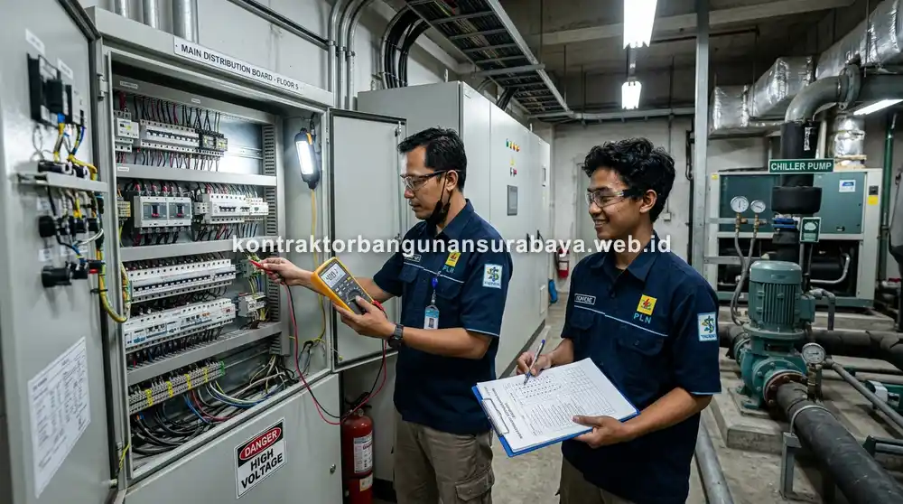

Poin Kunci (Key Takeaways)
- Preventive Maintenance: Perawatan terjadwal berkala yang bersifat proaktif sebelum kerusakan terjadi.
- Corrective Maintenance: Perbaikan reaktif yang dilakukan setelah kerusakan terjadi dan mengganggu fungsi fasilitas.
- Efisiensi Biaya: Mencegah kerusakan fatal komponen struktural & MEP terbukti memangkas biaya perbaikan darurat hingga puluhan persen.
- Strategi Kombinasi: Menerapkan preventive pada sistem kritis dan menyiapkan corrective sebagai respon cepat kerusakan ringan.
Daftar Isi Artikel
- 1. Apa Perbedaan Preventive dan Corrective Maintenance pada Bangunan?
- 2. Karakteristik dan Manfaat Preventive Maintenance Terjadwal
- 3. Kapan Corrective Maintenance Menjadi Pilihan yang Tepat
- 4. Kombinasi Strategi Maintenance yang Efisien dari kontraktorbangunansurabaya.web.id
- 5. Tanya Jawab Seputar Maintenance Bangunan (FAQ)
1. Apa Perbedaan Preventive dan Corrective Maintenance pada Bangunan?
Apa perbedaan preventive maintenance dan corrective maintenance pada bangunan?
Preventive maintenance adalah perawatan terjadwal yang dilakukan sebelum kerusakan terjadi untuk mencegah masalah lebih besar, sementara corrective maintenance adalah perbaikan yang dilakukan setelah kerusakan sudah muncul dan mengganggu fungsi bangunan. kontraktorbangunansurabaya.web.id membantu pemilik bangunan di Surabaya memahami kapan sebaiknya menerapkan masing-masing pendekatan agar biaya perawatan bangunan tetap efisien dalam jangka panjang.
Preventive Maintenance
- Sifat Tindakan: Proaktif & terencana
- Waktu Pelaksanaan: Terjadwal secara berkala (bulanan/tahunan)
- Tujuan: Mencegah kegagalan sistem & kerusakan fatal
- Dampak Biaya: Terprediksi, stabil, dan jauh lebih hemat
Corrective Maintenance
- Sifat Tindakan: Reaktif & perbaikan darurat
- Waktu Pelaksanaan: Setelah terjadi kegagalan/kerusakan fisik
- Tujuan: Memulihkan fungsi operasional kembali normal
- Dampak Biaya: Fluktuatif, mendadak, dan berpotensi tinggi
2. Karakteristik dan Manfaat Preventive Maintenance Terjadwal
Preventive maintenance dilakukan berdasarkan jadwal tetap, misalnya pembersihan filter AC setiap bulan atau pengecekan lapisan waterproofing setiap enam bulan, terlepas dari ada tidaknya tanda kerusakan yang terlihat, dengan tujuan utama mencegah kerusakan sebelum benar-benar terjadi.
Manfaat utama pendekatan ini adalah biaya yang cenderung lebih terkendali dan terprediksi, karena perbaikan kecil yang dilakukan secara rutin umumnya jauh lebih murah dibanding harus mengganti komponen yang sudah rusak total akibat dibiarkan tanpa perawatan dalam waktu lama.
Preventive maintenance juga membantu memperpanjang usia pakai peralatan, misalnya AC yang rutin dibersihkan filternya cenderung bekerja lebih efisien dan awet dibanding unit yang dibiarkan kotor dalam waktu lama tanpa perawatan berkala.
Tips Efisiensi Biaya Operasional
Pemeriksaan rutin pada instalasi pipa, panel kelistrikan, dan struktur dak beton mampu meminimalkan risiko penghentian operasional bisnis yang merugikan pada ruko maupun kantor di Surabaya.
3. Kapan Corrective Maintenance Menjadi Pilihan yang Tepat
Corrective maintenance dilakukan sebagai respons terhadap kerusakan yang sudah terjadi, misalnya AC yang tiba-tiba mati total atau kebocoran atap yang baru diketahui setelah air merembes ke plafon, sehingga sifatnya lebih reaktif dibanding preventive maintenance yang bersifat proaktif.

Meski idealnya preventive maintenance diterapkan seluas mungkin, beberapa komponen dengan usia pakai yang sulit diprediksi secara pasti, seperti komponen elektronik tertentu, terkadang lebih efisien ditangani dengan pendekatan corrective, asalkan kerusakannya tidak berisiko tinggi terhadap keselamatan penghuni bangunan.
Biaya corrective maintenance cenderung tidak terprediksi dan bisa jadi jauh lebih mahal dibanding biaya preventive yang seharusnya dikeluarkan secara berkala, terutama apabila kerusakan yang terjadi berdampak pada komponen lain di sekitarnya akibat dibiarkan terlalu lama.
4. Kombinasi Strategi Maintenance yang Efisien dari kontraktorbangunansurabaya.web.id
Strategi maintenance yang efisien umumnya mengombinasikan kedua pendekatan ini, menerapkan preventive maintenance pada komponen kritis yang berdampak besar apabila rusak, sementara corrective maintenance disiapkan sebagai respons cepat untuk kerusakan yang sifatnya lebih ringan dan jarang terjadi.
kontraktorbangunansurabaya.web.id membantu menyusun strategi kombinasi ini sesuai karakteristik dan usia bangunan, sehingga pemilik ruko atau gedung dapat mengalokasikan anggaran perawatan secara lebih tepat sasaran, bukan menghabiskan seluruh anggaran hanya untuk perbaikan darurat yang sebenarnya bisa dicegah.
Evaluasi berkala terhadap efektivitas strategi maintenance yang diterapkan juga disarankan, misalnya meninjau kembali frekuensi preventive maintenance apabila ditemukan pola kerusakan berulang yang menunjukkan jadwal perawatan saat ini masih belum optimal.
Penerapan preventive maintenance yang menyeluruh dibahas lebih detail pada panduan mengenai jasa maintenance bangunan gedung yang mencakup checklist harian hingga tahunan.
Konsultasi Gratis Sekarang
Ingin berdiskusi lebih lanjut mengenai kebutuhan konstruksi bangunan Anda di Surabaya? Hubungi tim kami melalui WhatsApp di 0889-8964-3555 untuk konsultasi awal tanpa biaya bersama kontraktorbangunansurabaya.web.id.
Hubungi Tim Maintenance5. Tanya Jawab Seputar Maintenance Bangunan (FAQ)
Reza Maulana Nehru
Technical Estimator & Construction Specialist di Kontraktor Bangunan Surabaya
Berpengalaman dalam manajemen perencanaan RAB, pengawasan struktur bangunan gedung, dan implementasi strategi pemeliharaan preventif bangunan komersial di Jawa Timur.